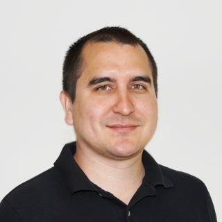

About Me

Hey! I'm Gary — an engineer by training, a technologist at heart, and someone who’s always been curious about how things work. I earned my Bachelor's in Mechanical Engineering from Cal Poly SLO, and after years in the field, I realized I couldn’t ignore the itch I had for computer science any longer. That led me to pursue a second Bachelor's in Computer Science through CSUMB’s post-baccalaureate program.
This site is my digital workshop — a space to share what I’m building, learning, and exploring. Whether it’s academic projects, hobby experiments, or ideas that bridge hardware and software, it all lives here. I created this site to document my journey and connect with others who are just as excited about tech and innovation as I am.
My interests sit at the intersection of engineering and emerging technologies — especially artificial intelligence, machine learning, and systems design. I believe this fusion is where the most exciting breakthroughs are happening.
In my free time, you’ll find me:
- Building personal projects that blend code, electronics, and mechanics
- Exploring the latest in AI, embedded systems, and automation
- Engaging with communities where ideas and skills are shared freely
As I continue on this path, I’m driven by the desire to create meaningful tools, smarter systems, and sustainable solutions. Thanks for checking out my site — feel free to reach out if you want to chat, collaborate, or geek out about cool tech.